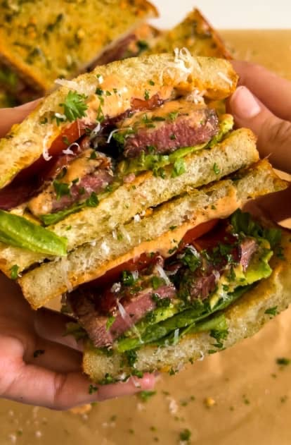

Steak Sandwich

Description
A steak sandwich that everyone will die for! Absolutely delicious sandwich that will have everyone begging for more!
Ingredients
- Sour cream
- Adobe paste in chipotle peppers
- Lime juice
- Honey
- Garlic bread
- Filet mignon center cut
Steps
- In a small bowl, blend in sour cream, adobe paste, lime juice, and honey
- Spread sauce mixture onto the garlic bread as desired
- Cook the steak on medium to high heat for about 2-3 minutes on all sides until a golden brown color